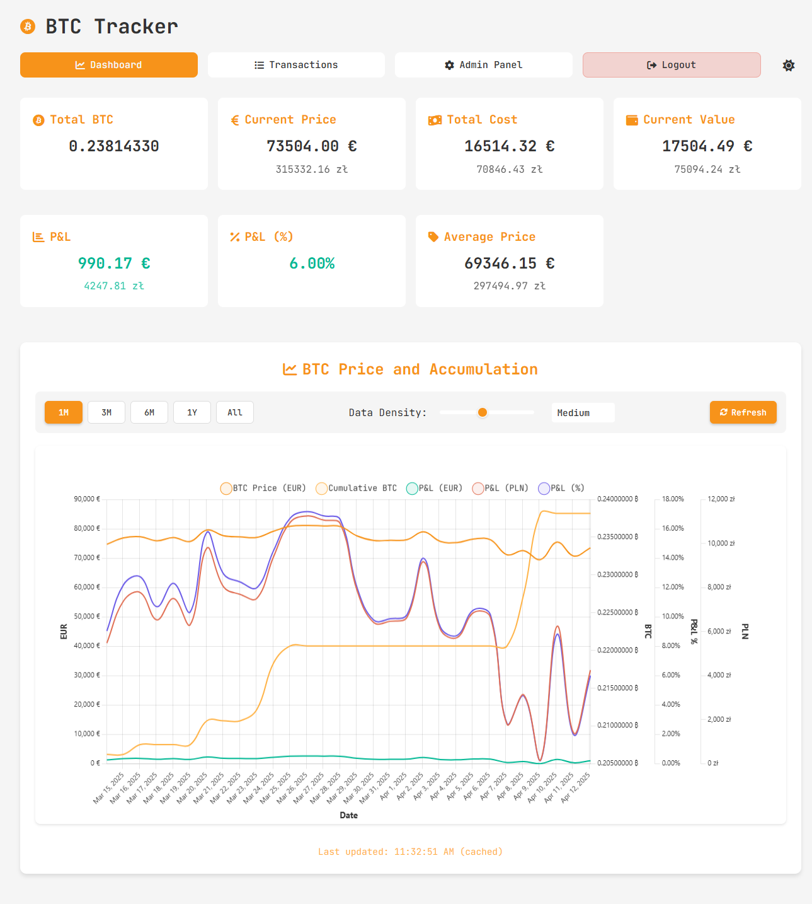
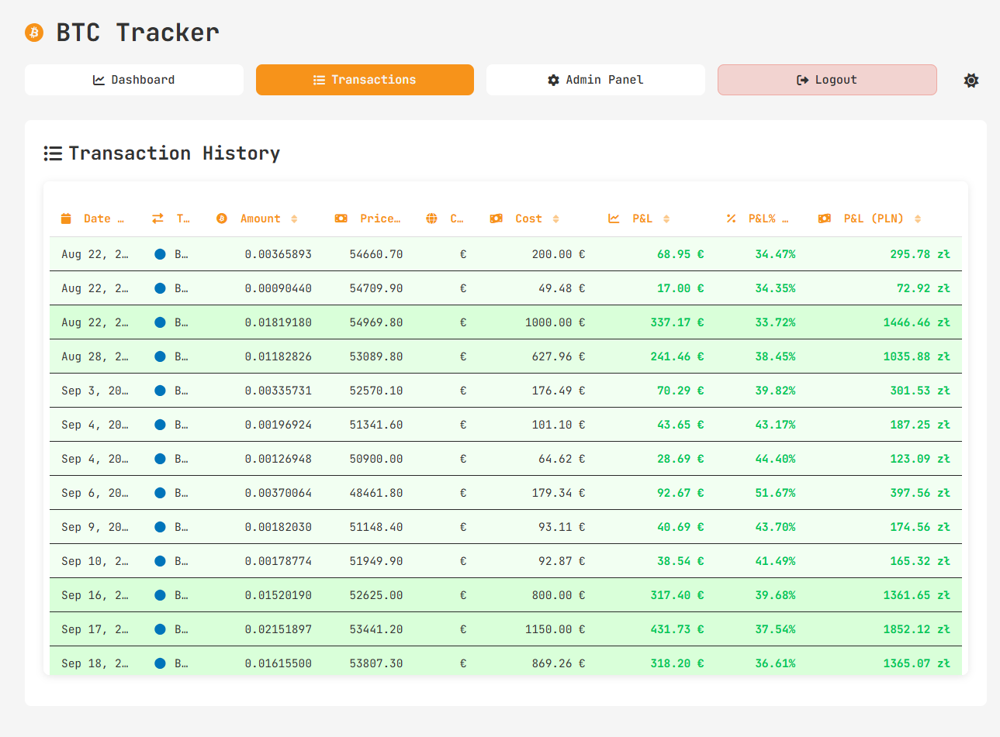
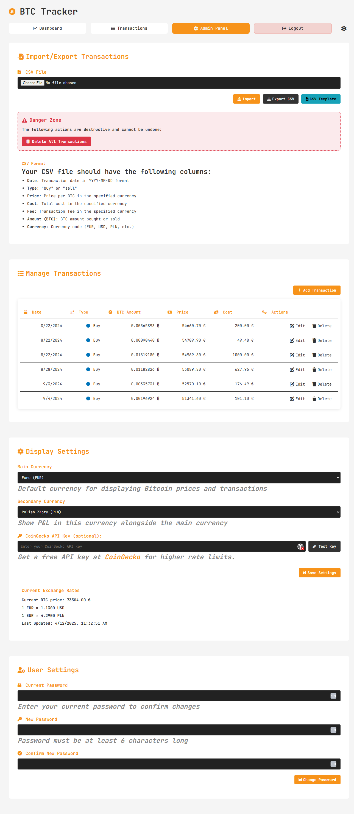
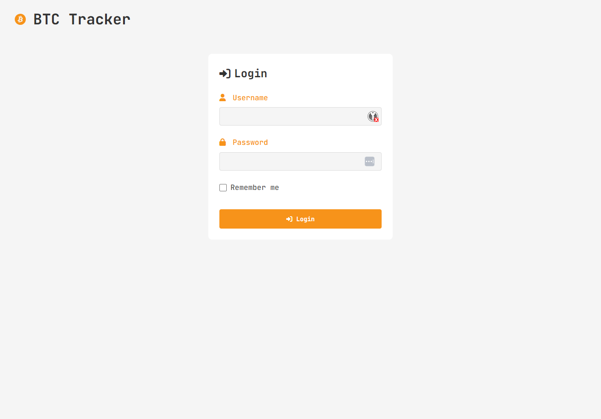
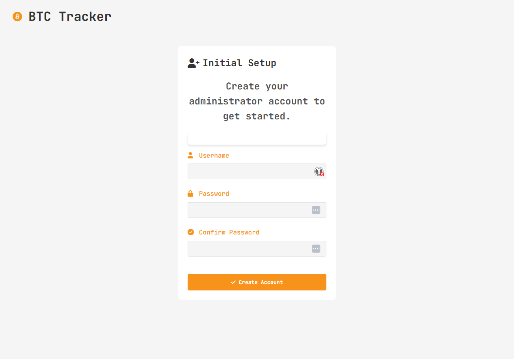

BTC Tracker Screenshots
Take a closer look at BTC Tracker's interface. These screenshots showcase the main features and UI of the application.

Dashboard
The main dashboard displays current Bitcoin price, portfolio value, and profit/loss metrics at a glance.
View full size

Transactions
The transactions page allows you to view, add, edit, and manage all your Bitcoin transactions with detailed information.
View full size

Admin Panel
The admin panel provides advanced configuration options and administrative controls for your BTC Tracker instance.
View full size

Secure Login
The login page provides a secure authentication system to protect your financial data.
View full size

Easy Setup
The setup page guides you through the simple process to get your BTC tracker up and running quickly.
View full size